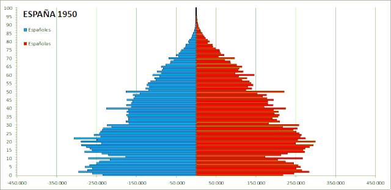

Welcome to your guide to Spain's demographics
- The population of Spain is around 46.7m people.
- It is the 5th most populous European country.
- Spain accounts for 0.6% of the globes population.
- The life expectancy in Spain is 84 years. Spain is ranked #7 in life expectancy worldwide.
- European Spanish is the main language of Spain.
- The national sport of Spain is football.
- One of the most famous symbols of Spain must be the Spanish bull, Bullfighting gets its origin from Roman arena games.
- Spains employment rate hovers around 63.6% with an unemployment rate of 12.6%. Spain has the highest unemployment rate in the European Union. Almost double of the EU's average.
- Since 2012 Spains population growth has been grinding to a halt. This can be attributed to multiple factors:
- High unemployment coupled with low wages discourages children.
- Little to none government incentives to having kids.
- Changing cultural norms.
- An aging population.

| Religion in Spain |
| Rank |
Religion |
Percentage of Population |
| 1 |
Roman Catholic |
67.4% |
| 2 |
Non-Religious |
15.6% |
| 3 |
Atheist |
12.2% |
| 4 |
Islam |
4% |
| 5 |
Other Religions |
0.08% |
| |
Total |
~100% |